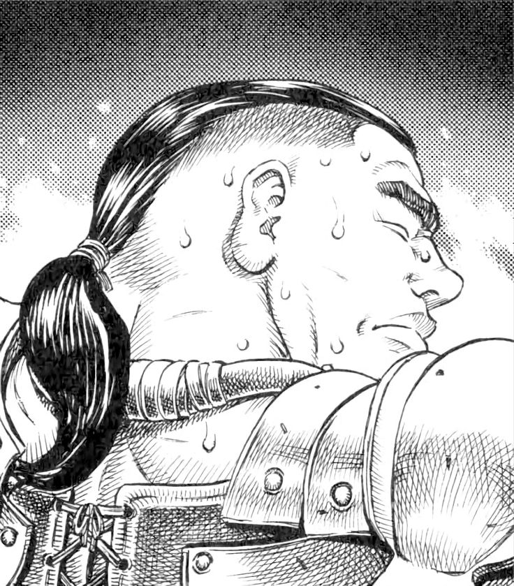
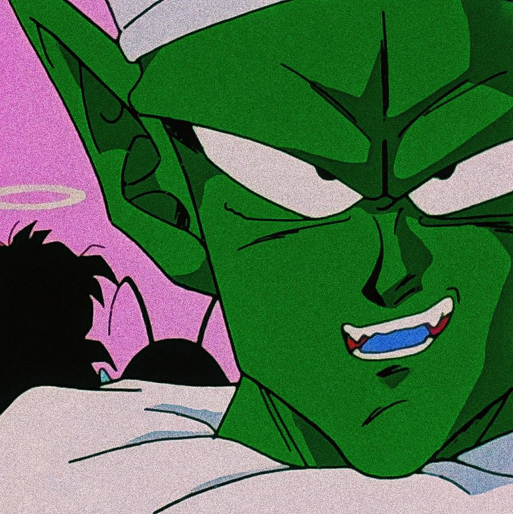
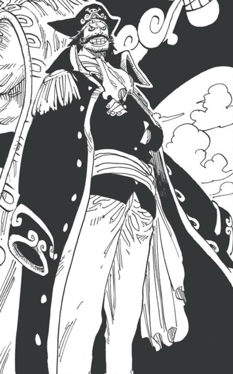
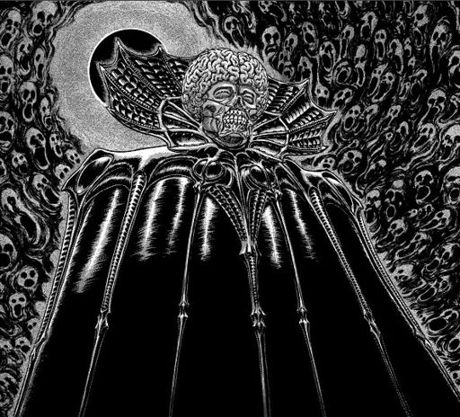
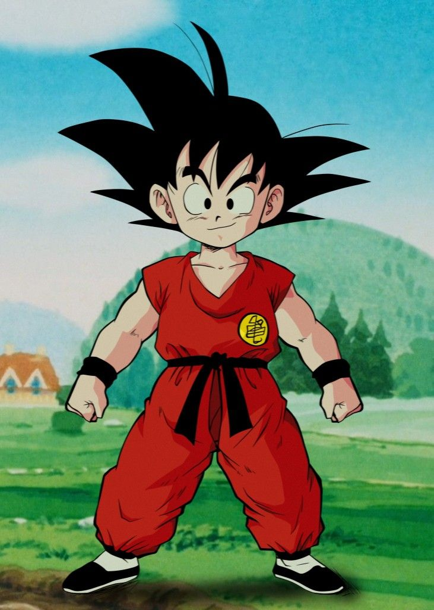
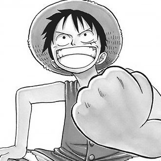

Wiki alex






Berserk
Berserk narra la historia de Gatsu, un jinete negro medieval, dotado de una gigantesca espada llama la Matadragones, que tiene por detrás, es ciego a un ojo y es dotado de un brazo metálico artificial en grado de disparar flechas y cañonazos. Gatsu vago sediento de venganza, a la búsqueda de un grupo de cinco son malvados que hacen parte de la secta de "La mano de Dios ". El carácter de Gatsu está duro y despiadado y lo demuestra ya del primero episodio, cuando entra en una taberna, hace a trozos de los bandidos que estaban molestando una muchacha.
Dragon Ball
Empieza todo cinco años después del matrimonio de Goku, cuando sobre nuestro planeta derriba un extraño astronave con a borde un potente guerrero dotado de una fuerza extraordinaria. Éste choca con Junior y lo derrota, pero su fin es Goku, por tanto se dirige hacia el Kame house, donde nuestro protagonista es reunido conjuntamente a su amigos Crilin, Bulma, Muten y su hijo, Son Gohan, nacido del matrimonio con ChichiRaditz. Éste parece en conjunto a su padre, hasta en la cola ( si no fueron para la cabellera, es difícil distinguir lo de Goku pequeño ).
One Piece
One Piece ha sido de comics ideado del diseñador de giapponese Eiichiro oye. El protagonista indiscutible del serio One Piece es Monkey Ruffy, llamado más simplemente juego, un muchacho bueno, altruista y valiente que ya de pequeño se pergue un grande sueño: querría ponerse el rey de los piratas. Su modelo es representado del mítico Shanks il rossoShanks el rojo, un pirata que Rubber quiere alcanza en fama. Además éste famoso pirata pierde un brazo para salvar Rubber de un monstruo marino, y le regala el sombrero de paja que caracteriza la figura de Rubber. Todo tiene comienzo cuando Rubber come por casualidad el fruto de mar llamado " Gam Gam ", el cual tiene la propiedad de transformar las células de las personas que lo tragan en engoma, por tanto Rubber se pone un muchacho elástico, fuerte e invulnerable, puede alargar a exeso cada de parte de su cuerpo: brazos, piernas, manos, pies de ... Gracias a éste poder, conjuntamente a su amigo Koby, decide de partir para la búsqueda del legendario tesoro de One Piece de los capitánes Gold Roger, a la fin después de ponerse el rey de los piratas. Rubber sabe que el único rumbo transitable para llegar al tesoro de One Piece es aquella del mayor azul marino, ésta roto es pero peligroso, en cuanto traficado de piratas terribles y de peligros de cada género.